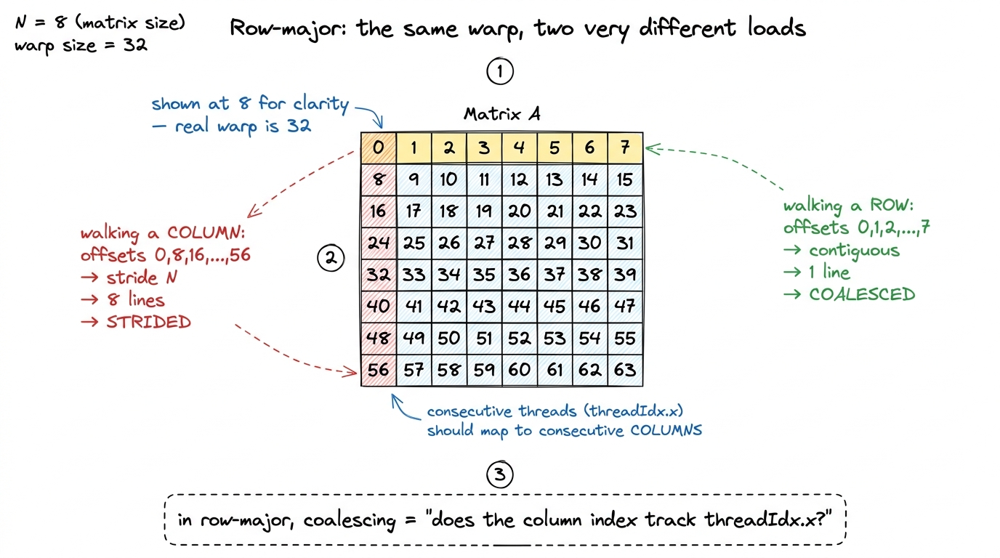
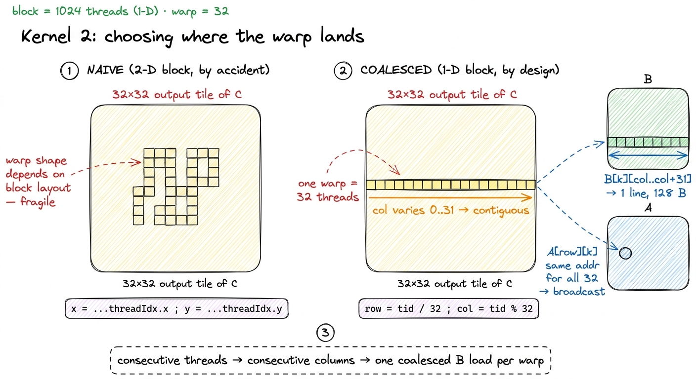
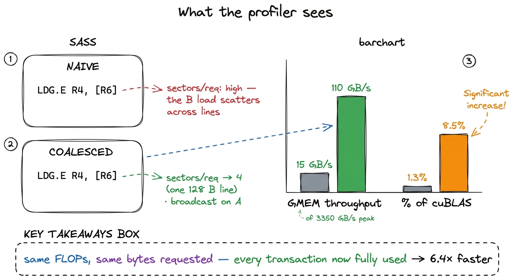
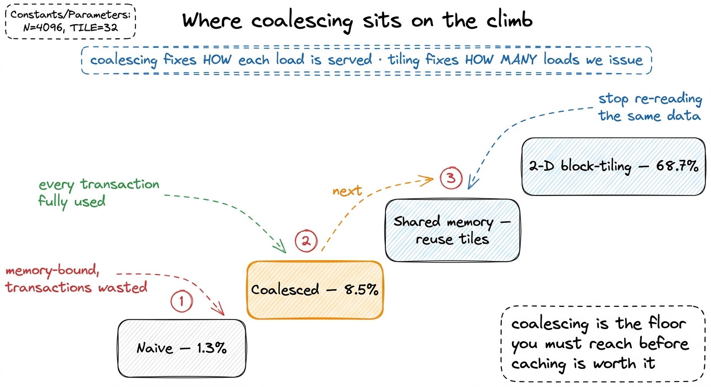

Memory coalescing
The naive GEMM kernel left us at a humiliating 1.3% of cuBLAS — a measured 309 GFLOP/s on a card that can do tens of thousands — and the profiler was blunt about why: we are memory-bound, and the memory system is barely awake. It reported 15 GB/s of global-memory throughput on hardware rated for 3.35 TB/s. That is not "a bit slow." That is running the firehose at about half a percent of what it can deliver.
Here is the surprising part, and the reason this article exists: the fix costs one line, removes zero floating-point operations, reads the exact same bytes the naive kernel read — and roughly quadruples throughput to 110 GB/s, lifting us to 8.5% of cuBLAS, a 6.4× speedup. It doesn't read less. It reads the same amount, in the right order. That reordering is called memory coalescing, and it is the single most important habit in all of GPU programming. Almost every kernel you will ever write lives or dies by it.
So the question this article answers is exactly this: why does the order in which 32 threads ask for memory change how fast the memory arrives — when the total amount of memory is identical? To answer it we have to stop thinking about a "load" as one thread grabbing one number, and start thinking about what the hardware physically does when a whole warp asks for memory at the same instant. Let me build that up from nothing.
First, the one prerequisite: what a warp is
If you have read Threads, warps, blocks, grids you can skim this; if not, here is the whole idea in one paragraph, because everything downstream depends on it.
When you launch a CUDA kernel you get thousands of threads. But threads do not execute one at a time, and they do not execute fully independently. The hardware bundles them into groups of exactly 32, called a warp, and the 32 threads of a warp march in lockstep: at each step they all execute the same instruction at the same time. When that instruction is a memory load, all 32 threads issue their load together, in the same clock. That simultaneity is the whole story. The memory system does not receive 32 requests one after another that it can think about separately — it receives 32 addresses at once and has to decide how to service them as a batch.
Which 32 threads form a warp? CUDA flattens the (x, y, z) thread index into a single linear number with x moving fastest: tid = threadIdx.x + blockDim.x * (threadIdx.y + blockDim.y * threadIdx.z). Warp 0 is tid 0–31, warp 1 is tid 32–63, and so on. 1 This is the detail almost everyone gets wrong the first time. Warps are formed by flattening (x, y, z) with x fastest — NOT by threadIdx.y. In a 32×32 block, one warp is a full row of constant y spanning threadIdx.x = 0..31. Get this backwards and your entire coalescing analysis inverts, because you'll reason about the wrong 32 addresses. For a simple 1-D block, that just means a warp is threadIdx.x = 0..31, then 32..63, and so on. Hold onto that: the threads of one warp have consecutive threadIdx.x. We will use it constantly.
 figure rendering · A warp is 32 threads that issue the same load in the same clock. The m
figure rendering · A warp is 32 threads that issue the same load in the same clock. The mThe unit of a memory access is not a float
Now the fact that reorganizes everything: the GPU does not fetch one float at a time. It cannot. Global memory (HBM) and the L2 cache that sits in front of it are organized into fixed-size chunks called lines (or transactions, or bursts — same idea). On Hopper the natural line is 128 bytes, aligned to a 128-byte boundary. And 128 bytes is exactly 32 FP32 floats (32 × 4 B). That number is not a coincidence you should ignore — 32 floats per line, 32 threads per warp — it is the hinge the whole design turns on.
Internally that 128-byte line is four 32-byte sectors, and the hardware can fetch just the sectors it needs. 2 The 128 B line splits into four 32 B sectors, and L2 tracks presence per-sector. So the real granularity of a partial access is 32 B, not 128 B — a strided pattern that touches one float per line still drags a full 32 B sector, wasting 28 of every 32 bytes rather than the full 124 of 128. The GPU supports 32 B, 64 B, and 128 B transactions; the scheduler picks the smallest set of them that covers the addresses. So the real number to track is sectors fetched per warp-load, but the mental model is simpler if you first think in whole 128-byte lines and refine later.
Here is the whole coalescing question, stated precisely, and it is the only question that matters for the rest of this article:
For one load instruction issued by one warp, how many memory transactions does the hardware have to run to satisfy all 32 addresses?
Everything else is a consequence of that count. Fewer transactions per load = more bandwidth actually used. So let's compute that count by hand for the two cases that matter.
The good case: 32 contiguous floats = one transaction
Suppose the 32 threads of a warp ask for 32 contiguous, aligned floats: thread t wants the address base + t*4 bytes. So t0 wants base, t1 wants base+4, t2 wants base+8, … t31 wants base+124. Add it up: the addresses span base to base+127. That is exactly 128 bytes. Exactly one aligned line. 3 The word "aligned" is doing real work here. If base is not a multiple of 128 B, those same 32 contiguous floats straddle a 128 B boundary and spill into a second line — so the warp needs 2 transactions instead of 1. That's why libraries pad rows to nice alignments (cudaMallocPitch, 128 B leading dimensions): contiguity gets you close, but only alignment gets you the clean single-line load.
So the hardware runs one transaction. It fetches 128 bytes, and all 128 bytes are wanted — every single byte lands in some thread's register. 100% of the fetched bytes are used. This is a fully coalesced access, and it is the only pattern that lets you approach the 3.35 TB/s HBM3 is rated for. One warp, one load, one line, zero waste.
Let me put a number on "zero waste," because it's the number that comes back at the end. 32 threads wanted 32 floats = 128 bytes of useful data. The hardware moved 128 bytes. Useful-fraction = 128/128 = 100%.
 figure rendering · When consecutive threads want consecutive floats, all 32 addresses fal
figure rendering · When consecutive threads want consecutive floats, all 32 addresses falThe bad case: strided access = the same reads, thrown away
Now break it, and watch the count explode. Suppose consecutive threads ask for addresses that are N floats apart — thread t wants base + t*N*4 bytes. This is not a contrived pattern; it is what you get, by accident, the moment you walk down a column of a row-major matrix. We'll see exactly that in a minute.
With a stride of N floats and a reasonably large N (say N = 4096, a common matrix size), the 32 addresses are base, base + 16384, base + 32768, … each 16 KB apart. No two of them are within 128 bytes of each other. So each address needs its own line.
Count it: 32 addresses, 32 different lines, up to 32 transactions for one load instruction. 4 "Up to" 32 because if the stride is small enough that two threads land in the same 128 B line, they share a transaction. At stride N with a large N, no sharing happens and you hit the worst case squarely. This is why a stride of 2 or 3 hurts far less than a stride of 4096 — it's about how many distinct lines the 32 addresses touch, not the stride number itself.
And here is the cruelty. Each of those 32 transactions drags in a whole line (at minimum a 32-byte sector), of which the thread uses exactly one 4-byte float. So the useful-fraction, in the worst case with 128-byte lines, is 128 bytes wanted out of 32 × 128 = 4096 bytes moved = 3.1%. Even counting the finer 32-byte sector granularity, you use 4 bytes of every 32 = 12.5%. You paid for the whole warehouse and took home one item from each aisle.
Stop and notice how surprising this is. The FLOPs are identical. The bytes you logically requested — 128 bytes of actual data — are identical. The source code looks reasonable and produces correct answers. Nothing errors. And yet effective bandwidth collapses by up to 32×, because 31 out of every 32 bytes the hardware moves get discarded on the floor. This is the trap: coalescing failures are silent. The kernel is correct. It is just secretly running the memory system at a third — or a thirtieth — of its rated speed.
 figure rendering · The naive-vs-good comparison at the heart of the article: strided acce
figure rendering · The naive-vs-good comparison at the heart of the article: strided acceThe path a load actually travels
Before we connect this to GEMM, one zoom-out, because it explains why the line — not the float — is the unit you're charged for. When a warp issues a load, the request walks a fixed path down the memory hierarchy, and every rung of that path is priced in fixed-size lines.
The request starts at the SM, misses the small on-chip caches, and travels down to the L2 cache (about 50 MiB on Hopper, shared by all SMs), which is organized in 128-byte lines of four 32-byte sectors. If L2 misses, the request goes all the way to HBM3 (80 GB at 3.35 TB/s), which is also read in bursts, not bytes. At no point on this path can the hardware fetch "just one float." The smallest thing that moves is a sector. So the count of lines you touch is literally the count of work the memory system does — and that is why lining your 32 threads up under one line, instead of 32, is worth up to 32×.
 figure rendering · Every load walks SM → L2 → HBM, and each level moves fixed-size lines.
figure rendering · Every load walks SM → L2 → HBM, and each level moves fixed-size lines.Why this bites GEMM specifically: row-major layout
Now we can connect the abstract stride to real matrix code, and it comes down to memory layout. C and CUDA store 2-D arrays in row-major order: the element A[i][j] lives at linear offset i * N + j. Read that carefully, because the whole GEMM story falls out of it:
- Consecutive elements within a row (
A[i][j],A[i][j+1], …) are contiguous — 4 bytes apart. - Consecutive elements down a column (
A[i][j],A[i+1][j], …) areNfloats apart — a stride ofN.
So the entire coalescing verdict for any matrix access collapses to one question you can answer at a glance:
As threadIdx.x increments across the warp, does the column index of the accessed element increment, or does the row index?
Column-index-varying is contiguous → coalesced → one line. Row-index-varying strides by N → up to 32 lines → the disaster we just computed. That's it. That single question is the lens for every load in every GEMM kernel you'll ever profile.

figure rendering · The by-hand version. In a row-major matrix, walking along a row is conDiagnosing the naive kernel
Look back at GEMM kernel 1. We mapped threads to output elements the obvious way:
const uint x = blockIdx.x * blockDim.x + threadIdx.x; // column of C
const uint y = blockIdx.y * blockDim.y + threadIdx.y; // row of Cwith a 32 × 32 block. Now apply our lens. Recall a warp is 32 threads of consecutive tid, and CUDA flattens with x fastest, so a warp shares one threadIdx.y and spans threadIdx.x = 0..31. Within one warp, then, x (the column) varies 0..31 and y (the row) is constant. So far, so good — that sounds coalesced. And for one of the two loads, it is. Let's trace both loads in the inner k loop, acc += A[y*N + k] * B[k*N + x]:
B[k*N + x]— as we step across the warp's threads,xincrements whilekandyare shared. So we walkB[k][x],B[k][x+1], … along a row ofB: offsetsk*N+x,k*N+x+1, … contiguous. Coalesced. One line. Good.A[y*N + k]— hereyandkare both constant across the warp (all 32 threads share the same rowyand the samek). So all 32 threads read the exact same address. That's a broadcast, which the hardware actually handles well — it fetches once and hands the value to all 32. 5 A broadcast (all 32 threads → one address) and a coalesced load (32 threads → 32 adjacent addresses) are both one transaction — the two happy cases. The unhappy case is everything in between and beyond: 32 threads scattered across many lines. So "coalesced" is slightly loose shorthand; the real goal is "few distinct lines touched," and a broadcast is the degenerate best case of that.
So the naive 32×32 kernel is not the pure 32× worst case — its dominant B load already coalesces and its A load broadcasts. Then why is it stuck at 15 GB/s and 1.3%? 6 The headline 15 GB/s figure and the 6.4× win come from the reference build in the CUDA-MMM worklog. The naive kernel's exact bandwidth depends on how the compiler schedules the two loads and the tiny amount of L2 reuse it accidentally gets; the point isn't the precise number but that a 2-D 32×32 mapping leaves the warp-to-data assignment to chance instead of choosing it. Because the mapping was chosen by accident, not designed. The 2-D indexing makes the warp-to-data assignment fragile: it depends on the block being exactly 32×32 and on the compiler laying warps out the way you hoped. Change the block shape and your coalescing quietly inverts. The problem isn't that this specific mapping is catastrophic — it's that nobody decided where the warp's fast axis should land. Kernel 2 decides it, on purpose.
The remap: one line, chosen deliberately
The fix is to stop letting the 2-D block layout choose our warps for us, and instead assign the flattened thread index to (row, col) by hand — so that the fastest-moving axis of the warp (threadIdx.x) maps to the column of the output, which is the contiguous axis of both C and the dominant B load. We keep 1024 threads per block, but declare the block as 1-D and compute the 2-D position ourselves:
const uint BLOCKSIZE = 32;
// block is now 1-D: blockDim = 32*32 = 1024, threadIdx.y == 0
const uint row = blockIdx.y * BLOCKSIZE + (threadIdx.x / BLOCKSIZE);
const uint col = blockIdx.x * BLOCKSIZE + (threadIdx.x % BLOCKSIZE);
if (row < N && col < N) {
float acc = 0.0f;
for (int k = 0; k < N; ++k)
acc += A[row * N + k] * B[k * N + col];
C[row * N + col] = acc;
}launched with a flat block:
dim3 block(BLOCKSIZE * BLOCKSIZE); // 1024 threads, 1-D
dim3 grid(CEIL_DIV(N, BLOCKSIZE), CEIL_DIV(N, BLOCKSIZE));
sgemm_coalesced<<<grid, block>>>(N, A, B, C);The entire change is those two arithmetic expressions: col = threadIdx.x % 32 and row = threadIdx.x / 32. Let's verify it with our lens. A warp is threadIdx.x = 0..31. Feed that through the map:
row = threadIdx.x / 32=0/32, 1/32, …, 31/32= 0 for all 32 threads. Row is constant across the warp.col = threadIdx.x % 32=0, 1, 2, …, 31. Column runs 0..31, one per thread.
So consecutive threads in a warp map to consecutive columns of the output. Now re-trace the two loads:
B[k*N + col]—colruns 0..31,kis shared. Offsetsk*N+colstep by 1: contiguous, one 128-byte line, fully coalesced for every warp. This is the load that dominates, and it's now perfect.A[row*N + k]—rowandkboth constant across the warp → all 32 threads hit the same address → clean broadcast.
Every warp's B load is now exactly one 128-byte transaction with zero waste, by design and not by luck. And notice what we did not do: we did not change a single FLOP, we did not stage anything in shared memory, we did not read fewer elements. We only decided, deliberately, where the warp's fast axis lands in memory.

figure rendering · The whole optimization in one picture: stop letting the 2-D block chooThe profile, and the bold number
Now we do what the worklog always does: form the hypothesis (coalescing the B load will collapse transactions-per-load and free up bandwidth), make the change, and let the profiler judge.
Compile and inspect the SASS: the global load servicing B compiles to an LDG.E that Nsight Compute reports as one sector-efficient transaction per warp instead of a scatter. The metric to watch in the memory workload section is l1tex__t_sectors_per_request — sectors fetched per load request. The naive mapping bloats this above the ideal; the remapped kernel drives the B access down toward the floor of 4 sectors (one 128-byte line) per warp. And the top-line number the profiler cares about moves exactly as predicted: global-memory throughput jumps from 15 GB/s to 110 GB/s — about 7.3× more bandwidth actually used.

figure rendering · The change is invisible in the FLOP count and loud everywhere in the mThe result: 8.5% of cuBLAS (about 1986 GFLOP/s), up from 1.3%. That is a 6.4× speedup from a change that touched two arithmetic expressions and removed not one floating-point operation and not one logically-required byte. We simply stopped throwing away most of every memory transaction. When I first internalized this, it genuinely bothered me — 6.4× for free, hidden behind % versus /? — until I did the by-hand count above and saw that the naive version was, on its worst loads, moving up to 32× the lines it needed. The speedup isn't magic. It's the wasted lines we stopped fetching.
Being honest: coalescing is the floor, not the ceiling
It's worth stating plainly what coalescing did not fix, because the next kernel exists precisely to fix it.
We are still reading O(N³) floats from HBM to do O(N³) FLOPs. The arithmetic intensity is still about 1 FLOP per element loaded — hundreds of times below the H100's ridge point of ~295 FLOPs/byte from the three regimes. Coalescing made each transaction fully useful, but it did nothing about the fact that we issue far too many of them: the element A[m][k] is still re-fetched from global memory by every one of the N threads that need it. We fixed the efficiency of each load; we did nothing about the number of loads.
So the ceiling here is low by construction — single digits of cuBLAS. And that ordering is deliberate: coalescing is the tax you pay before the next optimization is even worth attempting. There is no point staging tiles into fast on-chip memory if the loads that fill those tiles are themselves strided and wasteful — you'd just be caching garbage-efficiency reads. With the access pattern fixed, the obvious lever is to stop reading the same data over and over, by staging blocks of A and B into shared memory and reusing them across a whole block of threads. That is kernel 3, where we finally attack reuse, and where the real climb begins — from single-digit percentages up toward the 68.7% the 2-D block-tiled kernel eventually reaches, and beyond.

figure rendering · Coalescing is step two of a long ladder. It fixes the efficiency of eaThe pattern to carry forward is the one this whole change embodies, and it will govern every kernel from here on: the memory system rewards you for lining threads up under contiguous, aligned addresses, and punishes you — silently, without an error — for anything else. So the first question you ask of any new kernel is never "how many FLOPs" and never even "how many bytes." It is: where does the warp's fast axis land in memory? Get that right, and every fetch pays full freight. Get it wrong, and no amount of cleverness downstream will save you — you'll just be efficiently orchestrating loads that were wasting 90% of their bandwidth the whole time. Coalesce first. Earn the right to be clever second.